พลีซิโอซอร์
มอนธาตุน้ำ Lv 90–98
เจอที่
| แมพ | โซน | Lv | ภูมิภาค |
|---|---|---|---|
| ทะเลสาบไข่มังกร | 90–98 | ที่ราบสูง | |
| ทะเลสาบไข่มังกร | ฝั่งรังมังกร | 96–98 | ที่ราบสูง |
| หาดซากแอมโมไนต์ | 90–98 | ที่ราบสูง | |
| หาดซากแอมโมไนต์ | เปลือกหอยยักษ์ | 96–98 | ที่ราบสูง |
| ผารังเทอโรซอร์ | 90–98 | ที่ราบสูง | |
| ผารังเทอโรซอร์ | เสาหินรังยักษ์ | 96–98 | ที่ราบสูง |
| ป่ายางอำพัน | 90–98 | ที่ราบสูง | |
| ป่ายางอำพัน | ต้นอำพันยักษ์ | 96–98 | ที่ราบสูง |
ค่าสถานะตามเลเวล
| Lv | HP | ATK | DEF | MDEF | EXP | Job |
|---|---|---|---|---|---|---|
| 90 | 64,563 | 202–301 | 36 | 16 | 114 | 86 |
| 94 | 72,602 | 216–325 | 38 | 17 | 119 | 89 |
| 98 | 81,000 | 232–349 | 39 | 18 | 123 | 92 |
ตีด้วยธาตุไหนดี
แรงขึ้น: ลม ×1.75
เบาลง: ไฟ ×0.5 น้ำ ×0.25
วัตถุดิบที่ดรอป
| ของ | โอกาส | |
|---|---|---|
| ครีบพลีซิโอซอร์ | 55% | 1 ชิ้น (15% ได้ 2) |
อุปกรณ์ที่ดรอป (12)
| ของ | โอกาส |
|---|---|
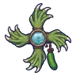 ดาวยักษ์มือกัปปะ | 0.12% |
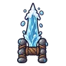 คาทาร์น้ำพุร้อน | 0.12% |
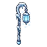 ตะเกียงน้ำแข็ง | 0.12% |
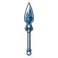 หอกกระจกทะเลสาบ | 0.12% |
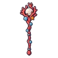 คทาปะการังมุก | 0.12% |
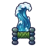 คาทาร์คลื่นยักษ์ | 0.06% |
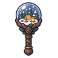 ออร์บลูกแก้วหิมะ | 0.06% |
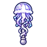 ออร์บแมงกะพรุน | 0.06% |
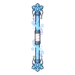 ไม้พลองพายุหิมะ | 0.06% |
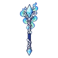 คทาแสงเหนือ | 0.06% |
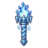 คบเพลิงไฟน้ำแข็ง | 0.06% |
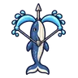 หน้าไม้วาฬราตรี | 0.06% |
สกิล
ยิงไกล (Lv 25+) · ยิงไกล (Lv 60+) · พ่น (Lv 60+)